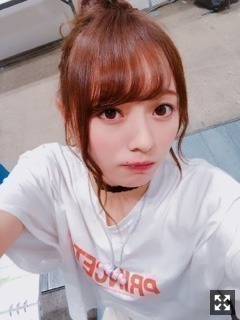
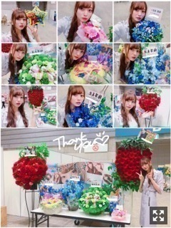
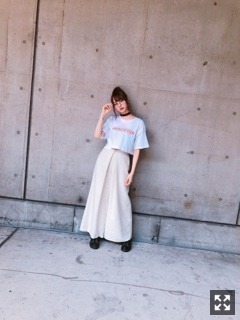

いっぱいの愛情
みまさまこんにちは！！
乃木坂46 ３期生の
梅澤美波です！！

おだんごー！！！
はお好きですか？
梅雨入りしましたね〜
湿気に弱すぎる髪を持つ私からすれば
ちょっと気分落ち気味( .. )
でも雨の匂い好きだし！
なんとか乗り越えられそうです！（笑）
昨日は久しぶりの個別握手会でした！
個握は１ヶ月以上前の
名古屋以来かな？？
久しぶりにお話出来て
とても嬉しかったです〜！
皆様の元気な顔が見れて
私もパワーを貰えましたっ( ˙-˙ )౨
久しぶりの握手会で
張り切りすぎちゃって
途中少々ご心配をおかけしましたが、、(；；)
物凄く元気いっぱいです！

お花もたくさんありがとう！
もう〜可愛い！とても可愛い！
癒されるし何より嬉しいです、
私のために
時間を使ってくれてありがとうね(；；)
今までのお花の写真
全部カメラロールに保存してあるから
今度コラージュしてみよっと
（笑）
昨日はね、
いつも以上に女の子が多かったの！
気のせいかな？
いや、多かったはず！
めちゃくちゃ嬉しかった〜(；；)
女の子の連番とか、
一人で来てくれる子もいたり、
本当に嬉しくなるんだ〜
私も握手会並んでたことあるから
その時の自分と重ね合わせて見ちゃう
本当にありがとう(；；)
落ち着いたら上げるので待っててね☺︎
服は珍しく白ばっかり着たよ〜
最近白が好きなんだよね〜

これは１部
かなり珍しかったのか
かなり好評でしたっ！ぴーす
最近はこういうラフな格好で
外に出掛けることも多い〜
(手についてるのはサイン書きの時についてしまったマッキーです〜
いつもの方も
初めましての方も
かなり久しぶりだった方も
みんなみんなありがとう！
次は来週の宮城、
また、すぐ会えます∠( ˙-˙ )／
そして告知を！
◎別冊カドカワ さま
《発売中！》
みりあさん、蘭世さん、
花奈さん、私の４人のインタビューが
掲載されています！
セーラームーンミュージカルについてです！
そして私、梅澤美波の
ソロロングインタビューも載っています！
なんと８ページも！
嬉しい(；；)
制服で撮影したカットもあるので
ぜひチェックしてください！
◎日経エンターテインメント さま
連載です！
Mステ、舞台についてなどなど、、
チェックよろしくお願いします！
◎６／２２ OVERTURE さま
こちらは、
井上さん、みりあさん、蘭世さん、
花奈さん、私の５人で出させていただきます！
チェックよろしくお願いします！
そしてもうすぐ
セラミュ、チームSTARが
初日を迎えます！
１２日からです！
不安も多いですが
今は楽しみって気持ちが大きい！
大好きな作品に携われることに
誇りを持って感謝の気持ちを持って
セーラージュピター、木野まことちゃんを
演じていきたいと思います！
あ、
公演の最後に
握手会でもたくさん聴かれたのですが
ペンライトはそれぞれの戦士のカラーでお願いします〜∠( ˙-˙ )／
私はジュピターなので緑！
一色の方が分かりやすいかな？？
もし持ってくよて方がいたら
ぜひ！！
イヤホンの電池切れた
音楽無いと無理人間な私からしたら
かなり大事！
今日やっていけるかな
ショック！！
それじゃ、
また、すぐ更新します！
おやすみ〜！
毎日すごく刺激的で楽しいです！
大好きな人がたくさん増えました！このミュージカルのおかげで！
もっと落ち着いて自分の力を発揮できるようにがんばります！
Original：https://www.nogizaka46.com/s/n46/diary/detail/45300?ima=4954&cd=MEMBER